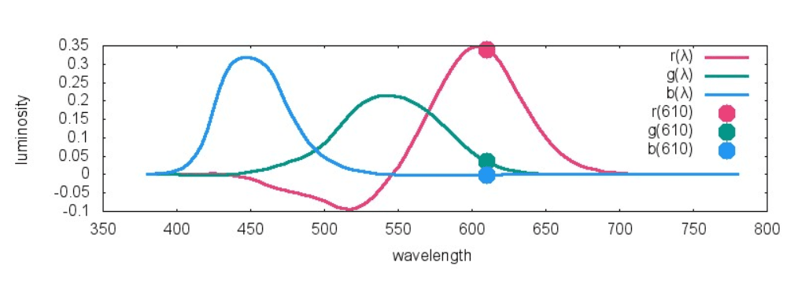
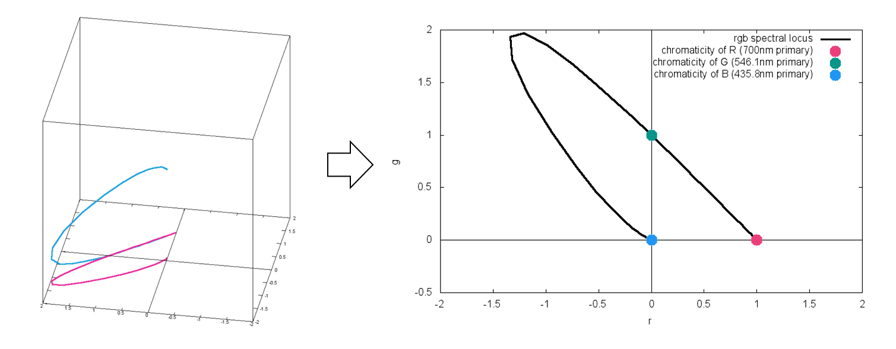
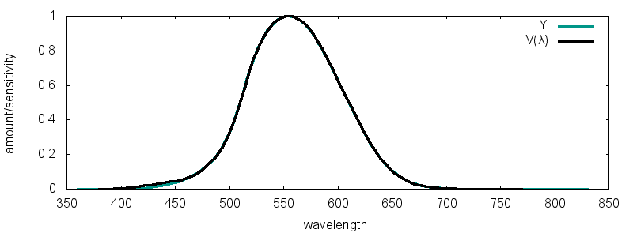
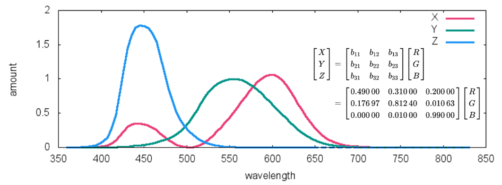
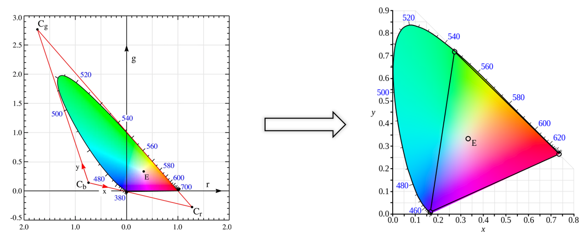
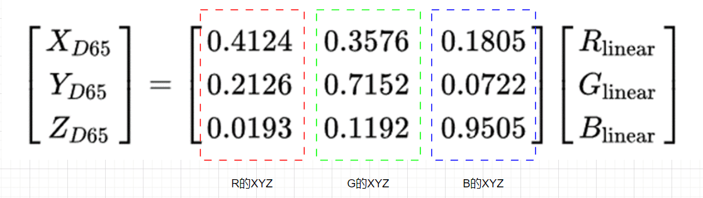
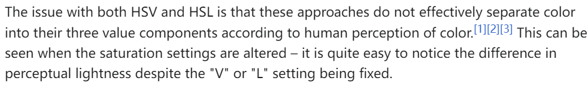
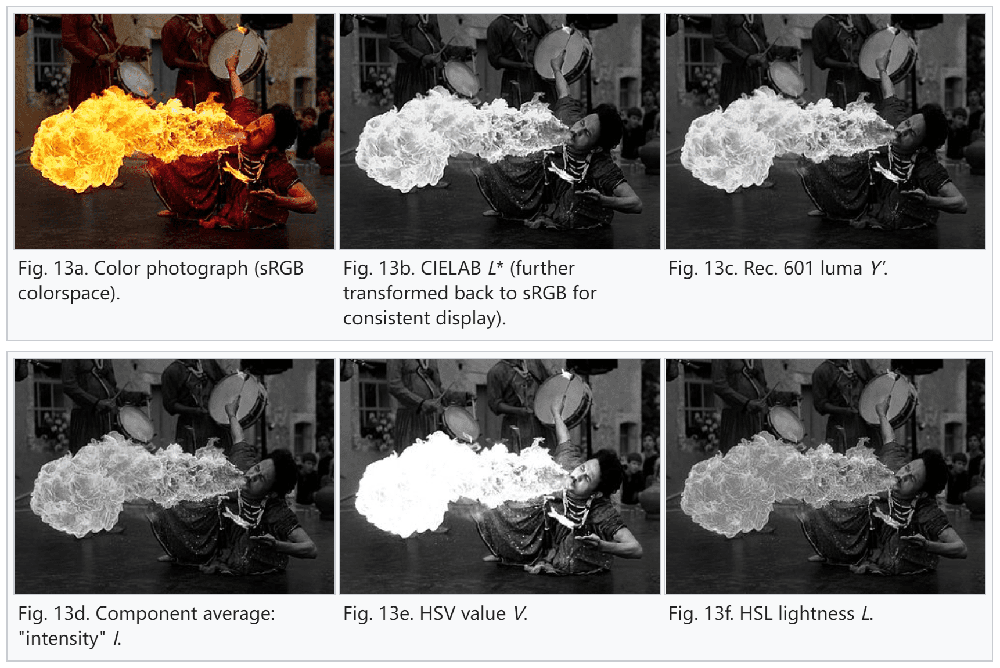
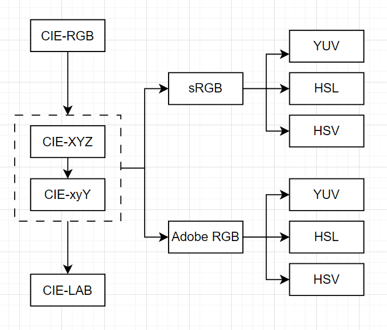

色彩空间的理解
一、光谱色和非光谱色
首先阅读前需要注意：抛弃以前的 RGB 值表示颜色的想法，现在我们置身于物理世界中，我们作为人类，发现其他动物都不能看到颜色，只有我们人类可以看到。那么颜色究竟是怎么一回事？
结论：这个世界没有颜色，不同波长的光组合起来光，被大脑接收，大脑告诉我们颜色的感觉。
回顾牛顿的三棱镜，将太阳光分离出了可见光谱。这些其实就是不同波长的光，如波长为 550nm 的光，我们称它给我们的感觉叫做绿色。下面的几种颜色叫做光谱色（Spectral Color）。

然而，我们却能感觉到很多其他的颜色。比如粉红色，虽然红色->橙色有着过渡，但是并没有发现有粉红色这种颜色。而这些颜色就叫做非光谱色，是通过这几种不同波长的光混合而成。
二、CIE 颜色实验和光谱曲线
我们现在的目标是复现光谱色（请一定要注意，我们现在只是复现光谱色），CIE 组织做了这种尝试，选了三种波长的光。现在有两个问题：
-
为什么选三种：因为人眼对颜色感知的细胞是三种，分别是 LMS，具体细节不用考虑。选择三种波长的光已经能很好满足人眼的感知。
-
为什么选红绿蓝这三种光：这里强调的是，我们现在没有颜色的概念，我们就是选了感觉是红色、绿色、蓝色的光。如红色，你可以选择 780nm 波长的光、也可以选择 750nm 的光。而 CIE 组织是权威机构，它做了实验，因此以后都要按照它的标准。
于是 CIE 就做了著名的黑屋实验，具体实验内容参考资料，只要知道就是用三种光混合，问参与者的感觉，最后形成了下图：

这个图的意义，我们能够用三种不同波长的光组合形成一个特定波长的光，如表现 610nm 的光可以用如下的图展示。此外上方的曲线图的纵轴是相对大小，因此下图中如果 RGB 三光分别调小系数，那么就能够让人眼感觉光在变暗：

通过这样的方式，我们沿着横轴，每一个波长的光有一个 (R,G,B) 的三元组。这就是耳熟能详的颜色匹配实验。
小趣事：CIE 很权威对吧，然而 CIE 当时做的著名实验只找了几十人！难以置信。而到了 2000 年左右时，刚才所说的三个和颜色有关的细胞 LMS，我们人类成功模拟了它们的感光度。然而，只能说生物学的发展没有跟上物理学发展的脚步，我们已经用了那么多年的 CIE-RGB 模型，积重难返了！！
三、CIE-RGB
下面才是正式开始色彩空间的讲解。现在我们进行这样的处理：\(r = R/(R + G + B)\)，其他同理。得出如下非常重要的三维空间的一条线，这条线是有颜色的，也就是光谱图的颜色，即红色逐渐变为紫色：

由于我们的转换方式，可以得知 \(b = 1 - r - g\)，我们只需要二维平面即可，还是一样，这条黑色曲线上面是有颜色的，即光谱色。：

现在我们考虑曲线内部的点，对于一个点，我们可知 r 和 g，然后推出 b，这样就获取到了 rgb 三个光的比例。假设给一个 \(k*r\) 大小的 R 光、给一个 \(k*g\) 大小的 G 光、给一个 \(k*b\) 大小的 B 光，合成了一个光 L，这个 L 给了我们一种颜色的感觉。此时如果是 \(2k*r+2k*g+2k*b\) 合成一个光 L2，由于比例关系还是 rgb，此时这个光给我们颜色的感觉很类似刚才的 L。
因此，曲线里面的每个点对应了一个颜色！这就是我们之前想找的非光谱色，得到了 CIE-RGB 颜色空间的图示：

有几个点需要说明：
-
再次强调：R 光 G 光 B 光只是我们从光谱色中挑出的三个不同波长的光，对于 G 光，可以选择 550nm，也可以 560nm。只不过 CIE 是权威机构，我们一致按照它挑的三种光。
-
曲线外面有没有颜色？这个不理解，个人认为曲线外面合成的光，给人眼是没有颜色感觉。反正我们也不管曲线外面，曲线里面的颜色够够的。
-
负数的意义？假设只有 r 是负数，实际上就是 ==合成的光 L + r 大小的 R 光== 和 ==g 大小的 G 光 + b 大小的 B 光== 给人眼的感觉是一样的。图中第一象限的三角形中的颜色，是我们可以用 R 光 G 光 B 光合成的；第四象限的颜色，就需要其他类型的基础光进行合成，怎么合成，这不在我们的学习内容内。
-
灰色哪去了？灰色和白色都是强度不同，给我们的感受也不同。==r 大小 R 光+g 大小 G 光+b 大小 B 光== 和 ==2r 大小 R 光 +2g 大小 G 光 +2b 大小 B 光== 给我们的感觉是有点不同的，图中是固定好了 R+G+B 下的结果。或许这个平面图没有完全表现所有颜色，但是现在我们就是规定了 颜色 这个概念，这个概念就是一个坐标值。因此在这样的概念中，灰色和白色是一个颜色！（并不严谨，之后会讨论）
四、亮度
现在，先让我们介绍一个概念：光度函数（Luminosity function）。它其实也是一个 CIE 做的实验，用于表现人眼的感知程度。不同波长有对应的值，最后就是一个函数\(V(\lambda)\)，如下图所示：

我们的考虑是：能不能用我们三色光曲线去近似上面的图？比如 500nm 的光，我们有系数 rgb，表示这样比例下，RGB 三光合成时颜色有点像，此时一定可以模拟出系数来，即：
这个公式是由无穷多解的，比如其中一个解就是两个 x 取 0，求出剩下的那个 x。但是又来一个 400nm 的光，它有新的上面方程。又有 450nm、550nm…。这样有了很多个方程，未知数是 x，没有一种可能：这个 x 是有解的？或者说，是可以近似的？
结果发现真的是可以的！结果\(1.000*R + 4.590*G + 0.060*B\) 可以近似，如下图所示。其实细想：对于光，人眼的光度就是 LMS 这三种类型的细胞共同合成的感觉。而我们选择三种基本光其实也是近似 LMS 感光行为，虽然感光曲线肯定和 LMS 感光不一样，但多少有点类似。比如观察感光程度，可以发现 G 的贡献特别大，而人眼细胞中 M 的贡献也是最大（很大）。

注意这里是光谱色的模拟。然后我们就扩展到整个色彩空间中，规定了这个概念：亮度（luminosity），对于 RGB 三光合成的光，它的亮度就是 \(1.000*R + 4.590*G + 0.060*B\)。
没错，亮度也是人为定义的概念！（个人观点） 他就是人类近似出光谱色的感光程度，然后将近似的公式扩展整个色彩之中。换句话说，假如我就用三个光的平均值来表示亮度，也可以呀，只不过你没有啥依据，你这样定义的亮度都无法符合光谱色给人眼的感觉。
五、CIE-XYZ 空间
XYZ 空间中 Y 就是上面所说的拟合值。而 XZ 是？它其实是为了取消掉 CIE-RGB 中的负数。对于 XYZ 的理解，就可以理解成坐标转换：
对于一个平面点 (1,1)，假设我现在将基改为 (1,1) 和 (-1,1)，那么这个点就成了 (1,0)。换成这样的基有什么好处，我就知道了向量映射在 45 度角的长度。
所以 XYZ 中有一个基就是 Y，而 X 和 Z 就是选择的另外两个基，当然他可不是乱选的啊，后面会提到。最后，光谱色下 XYZ 空间的系数变成下图：

对于 XYZ，非常推荐看维基百科的内容：https://en.wikipedia.org/wiki/CIE_1931_color_space#Meaning_of_X,_Y_and_Z
六、CIE-xyY 空间
OK，但是 CIE-RGB 有一个彩色平面图，CIE-XYZ 有没有呢。当然有，我们进行类似转换：
这样我们可以得到类似 CIE-RGB 的图。但是且慢！CIE-RGB 中规定 R+G+B 是一个定值（先这样理解），从而得到平面图；CIE-XYZ 也规定 X+Y+Z 是一个定值，然后得到平面图吧？
这样真的好吗，X+Y+Z 是什么含义呢？没含义。于是我们只规定一个 Y 值，来进行约束。这有点抽象，我们代入 CIE-RGB 空间：
假设我不用 R+G+B 来约束，我现在规定 B 一定是 100 大小的光。那么重新画出 rg 空间色彩图，可知点 (0.1, 0.8) 的颜色就是 100R+800G+100B 合成的光给我们的感觉；而点 (0.2, 0.6) 对应的颜色就是 100R+300B+100B 合成的光给我们的感觉。
在 CIE-RGB 中规定 B 的值可能有点奇怪。但是在 CIE-XYZ 中规定 Y 就显得很合理了，它代表了 亮度 嘛。所以我们一般规定 Y=1 或者 Y=100，然后画出 x 和 z 组成的平面图。但是 CIE 它规定的是 \(\mathbf{y = Z/(X + Y + Z)}\) ，所以最后平面分别是 x 和 y，这个规定其实我感觉不是很好。最后变成的结果如下，左图是 RGB，右图是 xyY：

最后就是想回到 XYZ 空间转换的问题，X 和 Z 为什么选择这种 X 和 Z。回到 CIE-RGB 空间的色彩图，左图的 Cb、Cr、Cg 分别是右图的 (0,0)、(0,1)、(1,0)。而 Cb->Cr 这条线其实是右图的 x 轴，Cb->Cg 这条线是右图的 y 轴。
所以，XYZ 转换它可不是乱转换的，既考虑了亮度 Y，又让颜色转换看起来合理，训练有素。推荐 B 站视频：色彩空间为什么那么空？（https://www.bilibili.com/video/BV19e4y1y7Mo）
七、sRGB
到了这里，就一切好说通了。我在上面的马蹄图选择三个点，这三个点就相当于是我的三个基本光，跟 CIE-RGB 选择三个光一样，只不过点不同而已。所以选择哪三个点（哪三个波长的光）很关键，需要统一一下，各家就是有不一样的想法。这就是 sRGB、AdobeRGB 等等的由来。
当然：要注意 sRGB 不是线性的，他最后还有个 gamma 转换。主要有几个问题：
-
问：选择哪种波长的光，那这不就意味着三个点都是在边缘处嘛，这样才是光谱色。为什么 sRGB 的三个点在内部呢
答：无所谓呀，我在内部就说明我的基本光是合成的罢了。比如 400nm 和 500nm 的光 2 比 1 混合（只是举例子哈），组成一个光，这就是我其中一个基本光。
-
问：既然如此，为什么要选择内部的光，而不是光谱色的光？用光谱色即面积大，又方便。
答：历史原因。2012 年提出的 Rec.2020 就是三个光都在边缘。为什么以前不行？因为以前显示器不行，是物理层面上的不行，显示不了较为边缘的光。
-
问：有 sRGB 坐标，可以转到 XYZ 空间坐标去吗？
答：当然可以了，从 XYZ 到 sRGB 其实就是一个转换，那我逆转换不就行了。当然首先要把 sRGB 去 gamma，转成了线性 sRGB，然后再去转成 XYZ。对于线性 sRGB 某个点，他的坐标是 (r,g,b)，三个基本光在 XYZ 的坐标分别为 RGB。你可以想象一下，那就相当于我用 r 大小的 R、g 大小的 G、b 大小的 B，合成了一个光，那不就加起来就完事了嘛。如下图所示，注意这里的 Rlinear 在 0-1 之间。PS：你可以试着将 RGB 的 XYZ 转为 xyY，你会发现坐标就是我们选择的三个点坐标。

-
问：从上面的公式可以感觉出。不同（RGB）所得结果下 Y 是不同的，那当然了，比如{1,0,0}和{0,0,1}。那么 Y 不同怎么在 xyY 空间显示马蹄图呢，马蹄图要求 Y=1 或 Y=100 呀。
答：调整 Y 呗，比如每个颜色我得出之后，就归一化让 Y=1 即可。当然这种做法其实不好，会有条状显示。那为什么我们经常看到如 sRGB、AdobeRGB 等空间在马蹄图上的三角形呢？实际上因为我们不用管三角形里面的颜色怎么样，画三角形只是想表示我能显示哪些范围的颜色。你可以想象：不同 RGB 模型下，三角形里面的颜色肯定有细微差别呀，所以不用纠结 RGB 模型在马蹄图上的颜色！
八、YUV，HSL，HSV
那么 YUV、HIS、HSV 又是什么？实际上这三个都是在 sRGB 这种颜色空间基础上进行的。网上资料，基本大部分都在千篇一律地说：Y 代表亮度、UV 代表颜色差异；V 代表亮度、HS 代表颜色差异…
这样的阐述实在是误导人！实际这些空间的亮度不是亮度。用英文来解释就很清晰了，YUV 的 Y 表示luma、HSL 的 L 表示lightness、HSV 的 V 表示value、brightness，而我们在 CIE-XYZ 颜色空间中的 Y 表示luminance。
从转换公式我们也可以看到，这三个空间的《亮度》都是人类想要体现出 RGB 三维坐标下的人眼感觉，即这些名词是人为定义的变量，背后没有物理意义。

为什么要有这些空间：
-
YUV 是因为黑白电视，RGB 的图像要显示出黑白的，那就这样做咯。有一个问题是 RGB 色彩空间有很多啊，难道每个色彩空间都用同一套公式？答案是否，每个空间都有对应的 YUV 转换公式。
-
RGB 对人类来说很不直观，难以理解，比如 10R20G30B，这是什么东东。人类更习惯想知道是鲜艳还是灰暗？HSB 和 HSL 基于此被创造出来。调色的时候，你觉得哪个更符合你的直觉，对你来说，它就更优秀。
HSV 和 HSL 的问题是，虽然很多时候确实还挺符合人眼，做的不错。但是第一转换的还不够，有时无法符合人眼；第二是没有有效地将颜色分为三个值分量，即改变某个分量其实会影响下一个分量；第三就是计算复杂度过高。

下面这张图充分体现了各个颜色空间的转换程度，想要更多资料，查阅维基百科的 HSL 和 HSV 空间（https://en.wikipedia.org/wiki/HSL_and_HSV#Disadvantages）：

九、CIE-Lab
回到 XYZ 空间，这个马蹄图，他有一个缺陷：跨度和人眼感觉不成线性。如下面这个经典的图，每个圈表示人眼感觉一样，很显然有问题，所以就有了 Lab 空间。差一个右边的方图

Lab 空间的转换本质上就是将上面的马蹄图变成 xx，所以转换方式也挺复杂。具体查阅维基百科就行。
十、总结
最后，可以去看一下参考资料里面第二个，即 B 站的视频，讲的很不错。下面这张图总结了我们讲的各种空间，希望可以弄清楚。Good Job！

参考资料
-
非常好的关于色彩空间的文章：https://medium.com/hipster-color-science/a-beginners-guide-to-colorimetry-401f1830b65a
-
B 站的一个特别直观的视频，同时包括色温的说明：https://www.bilibili.com/video/BV19e4y1y7Mo